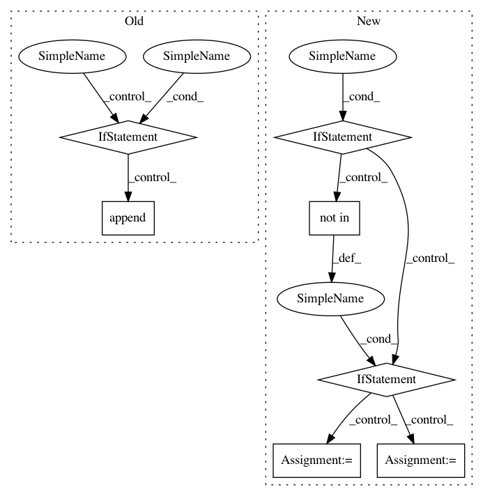

f00bbc9ca76a4a1fd9ddc46954a76237ecd4c616,iky_server/try.py,,extract_chunks,#Any#,16
Before Change
for s, tp in tagged_sent:
if tp != "O":
if tp.endswith(chunk_type):
if not tp.startswith("B"):
grp2 = tp
grp1.append(s)
else:
if grp1:
yield " ".join(grp1), "-".join(grp2)
grp1, grp2 = [s], [str(ind)]
yield " ".join(grp1), grp2
l = [("my", "o"), ("name", "B-DOMAIN"), ("is", "o"), ("Alfred", "B-NAME"),
("Francis", "I-NAME")]
After Change
for s, tp in tagged_sent:
if tp != "O":
label = tp[2:]
if tp.startswith("B"):
labeled[label] = s
elif tp.startswith("I") and (label not in labels) :
labels.append(label)
labeled[label] = s
elif (tp.startswith("I") and (label in labels)):
labeled[label] += " %s"%s
return labeled
l = [("sms", "B-TSK"), ("8714349616", "B-MOB"), ("saying", "I-MSG"), ("hello", "I-MSG"), ("how", "I-MSG"), ("are", "I-MSG"), ("you", "I-MSG")]
In pattern: SUPERPATTERN
Frequency: 3
Non-data size: 7
Instances
Project Name: alfredfrancis/ai-chatbot-framework
Commit Name: f00bbc9ca76a4a1fd9ddc46954a76237ecd4c616
Time: 2016-05-21
Author: alfred.francis@pearldatadirect.com
File Name: iky_server/try.py
Class Name:
Method Name: extract_chunks
Project Name: home-assistant/home-assistant
Commit Name: 5fba67f6c37a7c36935e4f9cb227b21f1b7a1c7b
Time: 2015-11-29
Author: happyleaves.tfr@gmail.com
File Name: homeassistant/components/light/limitlessled.py
Class Name:
Method Name: setup_platform
Project Name: home-assistant/home-assistant
Commit Name: d91fe792c56d872e9054fd608978fd51a99142dd
Time: 2015-11-27
Author: happyleaves.tfr@gmail.com
File Name: homeassistant/components/light/limitlessled.py
Class Name:
Method Name: setup_platform